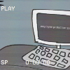

<!DOCTYPE html>
<html lang="en">
<head>
    <meta charset="UTF-8">
    <meta name="viewport" content="width=device-width, initial-scale=1.0">
    <title>Command Prompt</title>
    <style>
        body {
            background-color: black;
            color: green;
            font-family: monospace;
            display: flex;
            justify-content: center;
            align-items: center;
            height: 100vh;
            margin: 0;
        }
        .container {
            width: 60%;
            height: 50%;
            border: 1px solid green;
            padding: 20px;
            box-shadow: 0 0 10px green;
        }
        .input-field {
            width: 100%;
            background-color: black;
            color: green;
            border: none;
            outline: none;
        }
    </style>
</head>
<body>
    <div class="container">
        <div id="command-output"></div>
        <input type="text" id="command-input" class="input-field" placeholder="Enter command">
    </div>
    <script>
        document.getElementById('command-input').addEventListener('keypress', function(event) {
            if (event.key === 'Enter') {
                executeCommand();
                this.value = '';
            }
        });

        function executeCommand() {
            const inputField = document.getElementById('command-input');
            const outputDiv = document.getElementById('command-output');
            const command = inputField.value.trim();
            const p = document.createElement('p');
            p.textContent = 'C:\\> ' + command;
            outputDiv.appendChild(p);

            let response;
            switch (command.toLowerCase()) {
                case 'still alive':
                    response = 'theres no point crying over every mistake, gotta keep on trying until we run out of power.';
                    break;
                case 'tgi':
                    response = 'thank you for choosing afterburn graphics team.';
                    window.location.assign("https://thybytecast.github.io/EDS-GUI/");
                    break;
                case 'project nano 1':
                    response = 'afterburn nano system model 001. runtime: 53:05:32. omen: simple white ipod nano. Phased out due to escaping testing track. status: OBSOLETE/LOST.';
                    break;
                case 'project nano 2':
                    response = 'afterburn nano system model 002. runtime: 08:22:02. omen: rounded black ipod nano. Phased out due to long fall boot malfunction. status: OBSOLETE/DECEASED.';
                    break;
                case 'project nano 3':
                    response = 'afterburn nano system model 003. runtime: 43:05:32. omen: red short stubby ipod nano. Phased out due to being in too close proximity too explosive. status: OBSOLETE/DECEASED.';
                    break;
                case 'project nano 4':
                    response = 'afterburn nano system model 004. runtime: 03:06:12. omen: long purple ipod nano, defective battery. Phased out due to going in a bet with a scientist saying a turret would not in fact shoot them, this was proven wrong. status: OBSOLETE/DECEASED.';
                    break;
                case 'project nano 5':
                    response = 'afterburn nano system model 005. runtime: 22:23:26. omen: orange ipod nano with high definition camera on back, defective battery. Phased out due too being crushed during a test. status: OBSOLETE/DECEASED.';
                    break;
                case 'project nano 6':
                    response = 'afterburn nano system model 006. runtime: 43:05:32. omen: green short stubby ipod nano with no clickwheel. Phased out due to getting too close to thermal discouragement beam. status: OBSOLETE/DECEASED.';
                    break;
                case 'project nano 7':
                    response = 'afterburn nano system model 007. runtime: UNABLE TO RETRIVE. omen: grey ipod nano similar to ipod touch, last nano to use one of thermals designs. Phased out due too atempting to escape with scientist. this caused the EDS to deploy 3 turrets. status: UNKNOWN.';
                    break;
                case 'project nano 8':
                    response = 'TRACKER NOT FOUND.';
                    break;
                case 'project nano nanobot':
                    response = 'afterburn nano system model 101. runtime: CURRENTLY ACTIVE. omen: mass produced orange ipod nano based on 007 with some improvements. status: IN PRODUCTION.';
                    break;
                case 'project nano':
                    response = 'project nano is designed to extend a soul\'s lifespan, to request more information please specify model number.';
                    break;
                case 'employee defence system':
                    response = 'UNAUTHORIZED.';
                    break;
                case 'skibidi':
                    response = '9 you know your not allowed on my computer. -bill';
                    break;
                case 'essa':
                    response = 'UNAUTHORIZED.';
                    break;
                case 'rm -rf':
                    response = 'COMMAND OVERRULED BY USER: E.S.S.A.';
                    break;
                case 'whoami':
                    response = 'billdollar.';
                    break;
                case 'fart':
                    response = 'poopypoopyfartyfart.';
                    break;
                case 'thecakeisalie':
                    response = 'the end is never the end is never the end is never the end is never the end is never the end is never the end is never the end is never the end is never the end is never the end is never the end is never the end is never the end is never the end is never the end is never the end is never the end is never the end is near.';
                    break;
                case 'date':
                    response = new Date().toString();
                    break;
                case 'clear':
                    outputDiv.innerHTML = '';
                    return;
                case 'keeping tabs':
                    response = ' I never lose track of a good employee. ';
                    break;
                default:
                    response = 'Command not recognized';
            }

            const responseP = document.createElement('p');
            responseP.innerHTML = response;
            outputDiv.appendChild(responseP);
        }
    </script>
</body>
</html>
